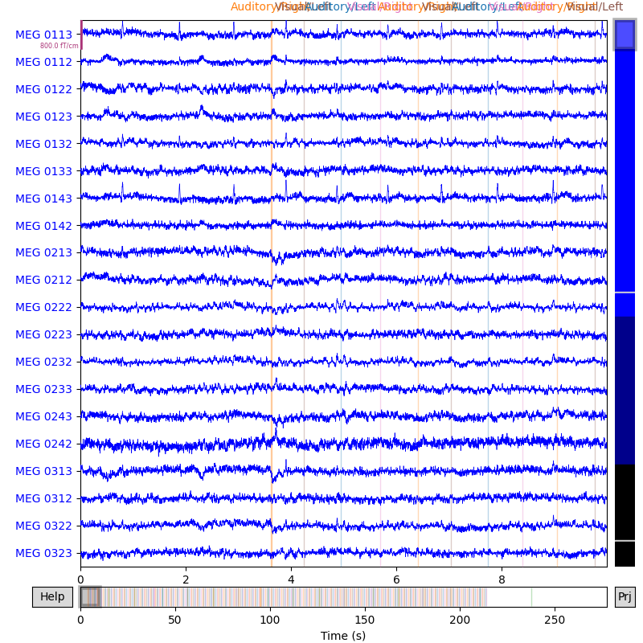

Note
Click here to download the full example code or to run this example in your browser via Binder
03. Interactive data inspection and bad channel selection¶
You can use MNE-BIDS interactively inspect your MEG or (i)EEG data. Problematic channels can be marked as “bad”, for example if the connected sensor produced mostly noise – or no signal at all. Similarly, you can declare channels as “good”, should you discover they were incorrectly marked as bad. Bad channel selection can also be performed non-interactively.
Furthermore, you can view and edit the experimental events and mark time segments as “bad”.
# Authors: Richard Höchenberger <richard.hoechenberger@gmail.com>
# License: BSD (3-clause)
We will demonstrate how to mark individual channels as bad on the MNE “sample” dataset. After that, we will mark channels as good again.
Let’s start by importing the required modules and functions, reading the “sample” data, and writing it in the BIDS format.
import os.path as op
import shutil
import mne
from mne_bids import (BIDSPath, write_raw_bids, read_raw_bids,
inspect_dataset, mark_bad_channels)
data_path = mne.datasets.sample.data_path()
raw_fname = op.join(data_path, 'MEG', 'sample', 'sample_audvis_raw.fif')
events_fname = op.join(data_path, 'MEG', 'sample', 'sample_audvis_raw-eve.fif')
event_id = {'Auditory/Left': 1, 'Auditory/Right': 2, 'Visual/Left': 3,
'Visual/Right': 4, 'Smiley': 5, 'Button': 32}
bids_root = op.join(data_path, '..', 'MNE-sample-data-bids')
bids_path = BIDSPath(subject='01', session='01', task='audiovisual', run='01',
root=bids_root)
To ensure the output path doesn’t contain any leftover files from previous tests and example runs, we simply delete it.
Warning
Do not delete directories that may contain important data!
Now write the raw data to BIDS.
raw = mne.io.read_raw_fif(raw_fname, verbose=False)
raw.info['line_freq'] = 60 # Specify power line frequency as required by BIDS.
write_raw_bids(raw, bids_path=bids_path, events_data=events_fname,
event_id=event_id, overwrite=True, verbose=False)
Out:
BIDSPath(
root: /home/circleci/mne_data/MNE-sample-data/../MNE-sample-data-bids
datatype: meg
basename: sub-01_ses-01_task-audiovisual_run-01_meg.fif)
Interactive use¶
Using mne_bids.inspect_dataset(), we can interactively explore the raw
data and toggle the channel status – bad or good – by clicking on the
respective traces or channel names. If there are any SSP projectors stored
with the data, a small popup window will allow you to toggle the projectors
on and off. If you changed the selection of bad channels, you will be
prompted whether you would like to save the changes when closing the main
window. Your raw data and the *_channels.tsv sidecar file will be updated
upon saving.
- 

Out:
Opening raw data file /home/circleci/mne_data/MNE-sample-data/../MNE-sample-data-bids/sub-01/ses-01/meg/sub-01_ses-01_task-audiovisual_run-01_meg.fif...
Read a total of 3 projection items:
PCA-v1 (1 x 102) idle
PCA-v2 (1 x 102) idle
PCA-v3 (1 x 102) idle
Range : 25800 ... 192599 = 42.956 ... 320.670 secs
Ready.
Reading events from /home/circleci/mne_data/MNE-sample-data/../MNE-sample-data-bids/sub-01/ses-01/meg/sub-01_ses-01_task-audiovisual_run-01_events.tsv.
Reading channel info from /home/circleci/mne_data/MNE-sample-data/../MNE-sample-data-bids/sub-01/ses-01/meg/sub-01_ses-01_task-audiovisual_run-01_channels.tsv.
/home/circleci/project/mne_bids/read.py:389: RuntimeWarning: The unit for channel(s) STI 001, STI 002, STI 003, STI 004, STI 005, STI 006, STI 014, STI 015, STI 016 has changed from V to NA.
raw.set_channel_types(channel_type_dict)
Reading 0 ... 166799 = 0.000 ... 277.714 secs...
Finding flat segments
0%| | Channels : 0/364 [00:00<?, ?it/s]
1%| | Channels : 2/364 [00:00<00:05, 60.82it/s]
1%|1 | Channels : 4/364 [00:00<00:05, 61.63it/s]
2%|1 | Channels : 6/364 [00:00<00:05, 62.43it/s]
2%|1 | Channels : 7/364 [00:00<00:05, 62.27it/s]
2%|2 | Channels : 9/364 [00:00<00:05, 63.24it/s]
3%|3 | Channels : 11/364 [00:00<00:05, 63.29it/s]
4%|3 | Channels : 13/364 [00:00<00:05, 64.11it/s]
4%|4 | Channels : 15/364 [00:00<00:05, 64.92it/s]
4%|4 | Channels : 16/364 [00:00<00:05, 64.42it/s]
5%|4 | Channels : 18/364 [00:00<00:05, 65.27it/s]
5%|5 | Channels : 19/364 [00:00<00:05, 64.54it/s]
5%|5 | Channels : 20/364 [00:00<00:05, 64.35it/s]
6%|6 | Channels : 22/364 [00:00<00:05, 65.29it/s]
7%|6 | Channels : 24/364 [00:00<00:05, 66.54it/s]
7%|6 | Channels : 25/364 [00:00<00:05, 65.60it/s]
7%|7 | Channels : 26/364 [00:00<00:05, 63.77it/s]
8%|7 | Channels : 28/364 [00:00<00:05, 63.15it/s]
8%|8 | Channels : 30/364 [00:00<00:05, 64.00it/s]
9%|8 | Channels : 32/364 [00:00<00:05, 64.10it/s]
9%|9 | Channels : 34/364 [00:00<00:05, 65.22it/s]
10%|9 | Channels : 35/364 [00:00<00:05, 63.56it/s]
10%|# | Channels : 37/364 [00:00<00:05, 63.44it/s]
10%|# | Channels : 38/364 [00:00<00:05, 63.16it/s]
11%|# | Channels : 40/364 [00:00<00:05, 64.10it/s]
12%|#1 | Channels : 42/364 [00:00<00:04, 64.96it/s]
12%|#2 | Channels : 44/364 [00:00<00:04, 65.55it/s]
13%|#2 | Channels : 46/364 [00:00<00:04, 66.66it/s]
13%|#3 | Channels : 48/364 [00:00<00:04, 67.49it/s]
14%|#3 | Channels : 50/364 [00:00<00:04, 67.72it/s]
14%|#4 | Channels : 52/364 [00:00<00:04, 68.67it/s]
15%|#4 | Channels : 54/364 [00:00<00:04, 69.30it/s]
15%|#5 | Channels : 55/364 [00:00<00:04, 68.82it/s]
16%|#5 | Channels : 57/364 [00:00<00:04, 69.51it/s]
16%|#5 | Channels : 58/364 [00:00<00:04, 68.97it/s]
16%|#6 | Channels : 60/364 [00:00<00:04, 69.66it/s]
17%|#6 | Channels : 61/364 [00:00<00:04, 69.09it/s]
17%|#7 | Channels : 62/364 [00:00<00:04, 68.35it/s]
18%|#7 | Channels : 64/364 [00:00<00:04, 68.98it/s]
18%|#8 | Channels : 66/364 [00:00<00:04, 69.79it/s]
19%|#8 | Channels : 68/364 [00:00<00:04, 69.74it/s]
19%|#9 | Channels : 70/364 [00:00<00:04, 70.24it/s]
20%|#9 | Channels : 72/364 [00:00<00:04, 71.09it/s]
20%|## | Channels : 74/364 [00:00<00:04, 70.84it/s]
21%|## | Channels : 76/364 [00:01<00:04, 71.66it/s]
21%|##1 | Channels : 78/364 [00:01<00:03, 72.64it/s]
22%|##1 | Channels : 80/364 [00:01<00:03, 72.12it/s]
23%|##2 | Channels : 82/364 [00:01<00:03, 72.69it/s]
23%|##3 | Channels : 84/364 [00:01<00:03, 73.26it/s]
24%|##3 | Channels : 86/364 [00:01<00:03, 73.33it/s]
24%|##4 | Channels : 88/364 [00:01<00:03, 73.45it/s]
25%|##4 | Channels : 90/364 [00:01<00:03, 73.92it/s]
25%|##5 | Channels : 92/364 [00:01<00:03, 73.37it/s]
26%|##5 | Channels : 94/364 [00:01<00:03, 73.78it/s]
26%|##6 | Channels : 95/364 [00:01<00:03, 73.09it/s]
27%|##6 | Channels : 97/364 [00:01<00:03, 73.06it/s]
27%|##6 | Channels : 98/364 [00:01<00:03, 72.45it/s]
27%|##7 | Channels : 100/364 [00:01<00:03, 72.79it/s]
28%|##8 | Channels : 102/364 [00:01<00:03, 73.27it/s]
29%|##8 | Channels : 104/364 [00:01<00:03, 72.46it/s]
29%|##9 | Channels : 106/364 [00:01<00:03, 73.19it/s]
30%|##9 | Channels : 108/364 [00:01<00:03, 73.77it/s]
30%|### | Channels : 110/364 [00:01<00:03, 73.62it/s]
31%|### | Channels : 112/364 [00:01<00:03, 74.31it/s]
31%|###1 | Channels : 113/364 [00:01<00:03, 73.44it/s]
32%|###1 | Channels : 115/364 [00:01<00:03, 73.05it/s]
32%|###1 | Channels : 116/364 [00:01<00:03, 69.91it/s]
32%|###2 | Channels : 118/364 [00:01<00:03, 70.03it/s]
33%|###2 | Channels : 120/364 [00:01<00:03, 70.58it/s]
34%|###3 | Channels : 122/364 [00:01<00:03, 70.07it/s]
34%|###4 | Channels : 124/364 [00:01<00:03, 70.97it/s]
35%|###4 | Channels : 126/364 [00:01<00:03, 71.88it/s]
35%|###5 | Channels : 128/364 [00:01<00:03, 71.44it/s]
36%|###5 | Channels : 130/364 [00:01<00:03, 71.95it/s]
36%|###6 | Channels : 132/364 [00:01<00:03, 72.65it/s]
37%|###6 | Channels : 134/364 [00:01<00:03, 72.52it/s]
37%|###7 | Channels : 136/364 [00:01<00:03, 73.04it/s]
38%|###7 | Channels : 137/364 [00:01<00:03, 72.09it/s]
38%|###8 | Channels : 139/364 [00:01<00:03, 72.36it/s]
39%|###8 | Channels : 141/364 [00:01<00:03, 72.98it/s]
39%|###9 | Channels : 143/364 [00:01<00:03, 73.03it/s]
40%|###9 | Channels : 145/364 [00:01<00:02, 74.04it/s]
40%|#### | Channels : 147/364 [00:01<00:02, 75.10it/s]
41%|#### | Channels : 149/364 [00:01<00:02, 74.70it/s]
41%|####1 | Channels : 151/364 [00:02<00:02, 74.73it/s]
42%|####2 | Channels : 153/364 [00:02<00:02, 75.31it/s]
43%|####2 | Channels : 155/364 [00:02<00:02, 75.20it/s]
43%|####3 | Channels : 157/364 [00:02<00:02, 75.60it/s]
44%|####3 | Channels : 159/364 [00:02<00:02, 75.80it/s]
44%|####4 | Channels : 161/364 [00:02<00:02, 75.61it/s]
45%|####4 | Channels : 163/364 [00:02<00:02, 75.89it/s]
45%|####5 | Channels : 165/364 [00:02<00:02, 76.41it/s]
46%|####5 | Channels : 167/364 [00:02<00:02, 75.95it/s]
46%|####6 | Channels : 169/364 [00:02<00:02, 76.52it/s]
47%|####6 | Channels : 171/364 [00:02<00:02, 76.75it/s]
48%|####7 | Channels : 173/364 [00:02<00:02, 75.76it/s]
48%|####8 | Channels : 175/364 [00:02<00:02, 76.03it/s]
48%|####8 | Channels : 176/364 [00:02<00:02, 75.14it/s]
49%|####8 | Channels : 178/364 [00:02<00:02, 75.78it/s]
49%|####9 | Channels : 180/364 [00:02<00:02, 76.22it/s]
50%|##### | Channels : 182/364 [00:02<00:02, 75.65it/s]
51%|##### | Channels : 184/364 [00:02<00:02, 76.07it/s]
51%|#####1 | Channels : 186/364 [00:02<00:02, 76.71it/s]
52%|#####1 | Channels : 188/364 [00:02<00:02, 75.66it/s]
52%|#####2 | Channels : 190/364 [00:02<00:02, 76.09it/s]
53%|#####2 | Channels : 192/364 [00:02<00:02, 76.40it/s]
53%|#####3 | Channels : 194/364 [00:02<00:02, 76.36it/s]
54%|#####3 | Channels : 196/364 [00:02<00:02, 76.91it/s]
54%|#####4 | Channels : 198/364 [00:02<00:02, 77.03it/s]
55%|#####4 | Channels : 200/364 [00:02<00:02, 76.55it/s]
55%|#####5 | Channels : 202/364 [00:02<00:02, 76.99it/s]
56%|#####6 | Channels : 204/364 [00:02<00:02, 77.44it/s]
56%|#####6 | Channels : 205/364 [00:02<00:02, 76.35it/s]
57%|#####6 | Channels : 207/364 [00:02<00:02, 76.69it/s]
57%|#####7 | Channels : 209/364 [00:02<00:02, 76.77it/s]
58%|#####7 | Channels : 211/364 [00:02<00:01, 76.61it/s]
59%|#####8 | Channels : 213/364 [00:02<00:01, 76.59it/s]
59%|#####9 | Channels : 215/364 [00:02<00:01, 76.12it/s]
60%|#####9 | Channels : 217/364 [00:02<00:01, 76.31it/s]
60%|###### | Channels : 219/364 [00:02<00:01, 76.74it/s]
61%|###### | Channels : 221/364 [00:02<00:01, 76.45it/s]
61%|######1 | Channels : 223/364 [00:02<00:01, 76.57it/s]
62%|######1 | Channels : 225/364 [00:02<00:01, 76.61it/s]
62%|######2 | Channels : 227/364 [00:02<00:01, 75.72it/s]
63%|######2 | Channels : 229/364 [00:03<00:01, 76.27it/s]
63%|######3 | Channels : 231/364 [00:03<00:01, 77.01it/s]
64%|######3 | Channels : 232/364 [00:03<00:01, 75.00it/s]
64%|######4 | Channels : 234/364 [00:03<00:01, 75.12it/s]
65%|######4 | Channels : 236/364 [00:03<00:01, 74.68it/s]
65%|######5 | Channels : 238/364 [00:03<00:01, 75.10it/s]
66%|######5 | Channels : 240/364 [00:03<00:01, 75.51it/s]
66%|######6 | Channels : 242/364 [00:03<00:01, 74.86it/s]
67%|######7 | Channels : 244/364 [00:03<00:01, 75.52it/s]
68%|######7 | Channels : 246/364 [00:03<00:01, 75.74it/s]
68%|######8 | Channels : 248/364 [00:03<00:01, 75.21it/s]
69%|######8 | Channels : 250/364 [00:03<00:01, 75.84it/s]
69%|######9 | Channels : 252/364 [00:03<00:01, 76.46it/s]
70%|######9 | Channels : 254/364 [00:03<00:01, 75.67it/s]
70%|####### | Channels : 256/364 [00:03<00:01, 75.89it/s]
71%|####### | Channels : 258/364 [00:03<00:01, 76.38it/s]
71%|#######1 | Channels : 260/364 [00:03<00:01, 76.21it/s]
72%|#######1 | Channels : 262/364 [00:03<00:01, 76.69it/s]
73%|#######2 | Channels : 264/364 [00:03<00:01, 77.14it/s]
73%|#######2 | Channels : 265/364 [00:03<00:01, 75.63it/s]
73%|#######3 | Channels : 267/364 [00:03<00:01, 75.98it/s]
74%|#######3 | Channels : 269/364 [00:03<00:01, 75.53it/s]
74%|#######4 | Channels : 271/364 [00:03<00:01, 75.87it/s]
75%|#######5 | Channels : 273/364 [00:03<00:01, 76.37it/s]
76%|#######5 | Channels : 275/364 [00:03<00:01, 76.64it/s]
76%|#######6 | Channels : 277/364 [00:03<00:01, 77.47it/s]
77%|#######6 | Channels : 279/364 [00:03<00:01, 78.16it/s]
77%|#######7 | Channels : 281/364 [00:03<00:01, 78.51it/s]
77%|#######7 | Channels : 282/364 [00:03<00:01, 77.35it/s]
78%|#######7 | Channels : 283/364 [00:03<00:01, 76.42it/s]
78%|#######8 | Channels : 285/364 [00:03<00:01, 76.59it/s]
79%|#######8 | Channels : 287/364 [00:03<00:00, 77.05it/s]
79%|#######9 | Channels : 289/364 [00:03<00:00, 76.53it/s]
80%|#######9 | Channels : 291/364 [00:03<00:00, 76.90it/s]
80%|######## | Channels : 293/364 [00:03<00:00, 77.20it/s]
81%|########1 | Channels : 295/364 [00:03<00:00, 76.87it/s]
82%|########1 | Channels : 297/364 [00:03<00:00, 77.36it/s]
82%|########1 | Channels : 298/364 [00:03<00:00, 76.29it/s]
82%|########2 | Channels : 300/364 [00:03<00:00, 76.52it/s]
83%|########2 | Channels : 301/364 [00:03<00:00, 75.14it/s]
83%|########3 | Channels : 303/364 [00:03<00:00, 74.28it/s]
84%|########3 | Channels : 304/364 [00:03<00:00, 73.30it/s]
84%|########4 | Channels : 307/364 [00:04<00:00, 75.53it/s]
87%|########6 | Channels : 315/364 [00:04<00:00, 78.82it/s]
88%|########7 | Channels : 320/364 [00:04<00:00, 81.82it/s]
90%|########9 | Channels : 327/364 [00:04<00:00, 85.18it/s]
92%|#########1| Channels : 334/364 [00:04<00:00, 88.75it/s]
94%|#########3| Channels : 341/364 [00:04<00:00, 92.31it/s]
95%|#########5| Channels : 347/364 [00:04<00:00, 95.90it/s]
97%|#########6| Channels : 353/364 [00:04<00:00, 99.60it/s]
99%|#########8| Channels : 359/364 [00:04<00:00, 103.36it/s]
100%|##########| Channels : 364/364 [00:04<00:00, 87.70it/s]
Marking 0.00% of time points (0 segments) and 0/364 channels bad
You can even apply frequency filters when viewing the data: A high-pass filter can remove slow drifts, while a low-pass filter will get rid of high-frequency artifacts. This can make visual inspection easier. Let’s apply filters with a 1-Hz high-pass cutoff, and a 30-Hz low-pass cutoff:
inspect_dataset(bids_path, l_freq=1., h_freq=30.)


Out:
Opening raw data file /home/circleci/mne_data/MNE-sample-data/../MNE-sample-data-bids/sub-01/ses-01/meg/sub-01_ses-01_task-audiovisual_run-01_meg.fif...
Read a total of 3 projection items:
PCA-v1 (1 x 102) idle
PCA-v2 (1 x 102) idle
PCA-v3 (1 x 102) idle
Range : 25800 ... 192599 = 42.956 ... 320.670 secs
Ready.
Reading events from /home/circleci/mne_data/MNE-sample-data/../MNE-sample-data-bids/sub-01/ses-01/meg/sub-01_ses-01_task-audiovisual_run-01_events.tsv.
Reading channel info from /home/circleci/mne_data/MNE-sample-data/../MNE-sample-data-bids/sub-01/ses-01/meg/sub-01_ses-01_task-audiovisual_run-01_channels.tsv.
/home/circleci/project/mne_bids/read.py:389: RuntimeWarning: The unit for channel(s) STI 001, STI 002, STI 003, STI 004, STI 005, STI 006, STI 014, STI 015, STI 016 has changed from V to NA.
raw.set_channel_types(channel_type_dict)
Reading 0 ... 166799 = 0.000 ... 277.714 secs...
Finding flat segments
0%| | Channels : 0/364 [00:00<?, ?it/s]
0%| | Channels : 1/364 [00:00<00:06, 57.55it/s]
1%| | Channels : 2/364 [00:00<00:06, 57.45it/s]
1%|1 | Channels : 4/364 [00:00<00:06, 58.29it/s]
2%|1 | Channels : 6/364 [00:00<00:06, 59.16it/s]
2%|1 | Channels : 7/364 [00:00<00:06, 59.17it/s]
2%|2 | Channels : 9/364 [00:00<00:05, 60.17it/s]
3%|3 | Channels : 11/364 [00:00<00:05, 60.32it/s]
4%|3 | Channels : 13/364 [00:00<00:05, 61.19it/s]
4%|4 | Channels : 15/364 [00:00<00:05, 62.05it/s]
4%|4 | Channels : 16/364 [00:00<00:05, 61.71it/s]
5%|4 | Channels : 18/364 [00:00<00:05, 62.58it/s]
5%|5 | Channels : 19/364 [00:00<00:05, 62.18it/s]
5%|5 | Channels : 20/364 [00:00<00:05, 62.13it/s]
6%|6 | Channels : 22/364 [00:00<00:05, 63.03it/s]
7%|6 | Channels : 24/364 [00:00<00:05, 64.23it/s]
7%|7 | Channels : 26/364 [00:00<00:05, 64.41it/s]
8%|7 | Channels : 28/364 [00:00<00:05, 65.02it/s]
8%|8 | Channels : 30/364 [00:00<00:05, 65.76it/s]
9%|8 | Channels : 32/364 [00:00<00:05, 65.60it/s]
9%|9 | Channels : 34/364 [00:00<00:04, 66.60it/s]
10%|9 | Channels : 36/364 [00:00<00:04, 67.43it/s]
10%|# | Channels : 37/364 [00:00<00:04, 67.01it/s]
10%|# | Channels : 38/364 [00:00<00:04, 66.22it/s]
11%|# | Channels : 40/364 [00:00<00:04, 66.89it/s]
11%|#1 | Channels : 41/364 [00:00<00:04, 66.61it/s]
12%|#1 | Channels : 43/364 [00:00<00:04, 67.86it/s]
12%|#2 | Channels : 45/364 [00:00<00:04, 68.65it/s]
13%|#2 | Channels : 47/364 [00:00<00:04, 68.67it/s]
13%|#3 | Channels : 49/364 [00:00<00:04, 69.44it/s]
14%|#4 | Channels : 51/364 [00:00<00:04, 70.02it/s]
15%|#4 | Channels : 53/364 [00:00<00:04, 69.97it/s]
15%|#5 | Channels : 55/364 [00:00<00:04, 70.24it/s]
16%|#5 | Channels : 57/364 [00:00<00:04, 70.83it/s]
16%|#5 | Channels : 58/364 [00:00<00:04, 70.07it/s]
16%|#6 | Channels : 60/364 [00:00<00:04, 70.66it/s]
17%|#6 | Channels : 61/364 [00:00<00:04, 69.87it/s]
17%|#7 | Channels : 62/364 [00:00<00:04, 68.85it/s]
18%|#7 | Channels : 64/364 [00:00<00:04, 69.33it/s]
18%|#7 | Channels : 65/364 [00:00<00:04, 68.94it/s]
18%|#8 | Channels : 67/364 [00:00<00:04, 69.90it/s]
19%|#8 | Channels : 69/364 [00:00<00:04, 70.75it/s]
19%|#9 | Channels : 70/364 [00:00<00:04, 69.70it/s]
20%|#9 | Channels : 71/364 [00:00<00:04, 69.26it/s]
20%|## | Channels : 73/364 [00:00<00:04, 70.00it/s]
21%|## | Channels : 75/364 [00:00<00:04, 70.77it/s]
21%|##1 | Channels : 77/364 [00:01<00:04, 70.67it/s]
22%|##1 | Channels : 79/364 [00:01<00:03, 71.38it/s]
22%|##1 | Channels : 80/364 [00:01<00:04, 70.68it/s]
23%|##2 | Channels : 82/364 [00:01<00:03, 71.22it/s]
23%|##2 | Channels : 83/364 [00:01<00:03, 70.70it/s]
23%|##3 | Channels : 85/364 [00:01<00:03, 71.45it/s]
24%|##3 | Channels : 87/364 [00:01<00:03, 72.06it/s]
24%|##4 | Channels : 88/364 [00:01<00:03, 71.04it/s]
25%|##4 | Channels : 90/364 [00:01<00:03, 71.53it/s]
25%|##5 | Channels : 92/364 [00:01<00:03, 71.06it/s]
26%|##5 | Channels : 94/364 [00:01<00:03, 71.44it/s]
26%|##6 | Channels : 95/364 [00:01<00:03, 70.77it/s]
27%|##6 | Channels : 97/364 [00:01<00:03, 70.71it/s]
27%|##6 | Channels : 98/364 [00:01<00:03, 70.14it/s]
27%|##7 | Channels : 100/364 [00:01<00:03, 70.50it/s]
28%|##8 | Channels : 102/364 [00:01<00:03, 70.99it/s]
28%|##8 | Channels : 103/364 [00:01<00:03, 70.42it/s]
29%|##8 | Channels : 104/364 [00:01<00:03, 69.42it/s]
29%|##9 | Channels : 106/364 [00:01<00:03, 70.14it/s]
30%|##9 | Channels : 108/364 [00:01<00:03, 70.76it/s]
30%|### | Channels : 110/364 [00:01<00:03, 70.70it/s]
31%|### | Channels : 112/364 [00:01<00:03, 71.28it/s]
31%|###1 | Channels : 113/364 [00:01<00:03, 70.42it/s]
32%|###1 | Channels : 115/364 [00:01<00:03, 71.11it/s]
32%|###2 | Channels : 117/364 [00:01<00:03, 71.73it/s]
33%|###2 | Channels : 119/364 [00:01<00:03, 71.24it/s]
33%|###3 | Channels : 121/364 [00:01<00:03, 71.89it/s]
34%|###3 | Channels : 123/364 [00:01<00:03, 72.64it/s]
34%|###4 | Channels : 125/364 [00:01<00:03, 72.72it/s]
35%|###4 | Channels : 127/364 [00:01<00:03, 73.32it/s]
35%|###5 | Channels : 128/364 [00:01<00:03, 72.34it/s]
36%|###5 | Channels : 130/364 [00:01<00:03, 72.69it/s]
36%|###6 | Channels : 132/364 [00:01<00:03, 73.31it/s]
37%|###6 | Channels : 134/364 [00:01<00:03, 73.06it/s]
37%|###7 | Channels : 136/364 [00:01<00:03, 73.40it/s]
38%|###7 | Channels : 137/364 [00:01<00:03, 72.21it/s]
38%|###8 | Channels : 139/364 [00:01<00:03, 72.56it/s]
39%|###8 | Channels : 141/364 [00:01<00:03, 73.08it/s]
39%|###9 | Channels : 143/364 [00:01<00:03, 73.05it/s]
40%|###9 | Channels : 145/364 [00:01<00:02, 74.01it/s]
40%|#### | Channels : 147/364 [00:01<00:02, 75.04it/s]
41%|#### | Channels : 148/364 [00:01<00:02, 74.25it/s]
41%|####1 | Channels : 150/364 [00:01<00:02, 74.84it/s]
41%|####1 | Channels : 151/364 [00:01<00:02, 73.76it/s]
42%|####2 | Channels : 153/364 [00:02<00:02, 74.24it/s]
43%|####2 | Channels : 155/364 [00:02<00:02, 74.11it/s]
43%|####3 | Channels : 157/364 [00:02<00:02, 74.54it/s]
43%|####3 | Channels : 158/364 [00:02<00:02, 73.50it/s]
44%|####3 | Channels : 160/364 [00:02<00:02, 73.94it/s]
45%|####4 | Channels : 162/364 [00:02<00:02, 74.69it/s]
45%|####4 | Channels : 163/364 [00:02<00:02, 73.92it/s]
45%|####5 | Channels : 165/364 [00:02<00:02, 74.40it/s]
46%|####5 | Channels : 167/364 [00:02<00:02, 73.93it/s]
46%|####6 | Channels : 169/364 [00:02<00:02, 74.48it/s]
47%|####6 | Channels : 171/364 [00:02<00:02, 74.96it/s]
48%|####7 | Channels : 173/364 [00:02<00:02, 74.04it/s]
48%|####8 | Channels : 175/364 [00:02<00:02, 74.53it/s]
48%|####8 | Channels : 176/364 [00:02<00:02, 73.66it/s]
49%|####8 | Channels : 178/364 [00:02<00:02, 74.27it/s]
49%|####9 | Channels : 180/364 [00:02<00:02, 74.67it/s]
50%|##### | Channels : 182/364 [00:02<00:02, 74.26it/s]
51%|##### | Channels : 184/364 [00:02<00:02, 74.52it/s]
51%|#####1 | Channels : 186/364 [00:02<00:02, 74.88it/s]
51%|#####1 | Channels : 187/364 [00:02<00:02, 73.92it/s]
52%|#####1 | Channels : 188/364 [00:02<00:02, 72.75it/s]
52%|#####2 | Channels : 190/364 [00:02<00:02, 73.17it/s]
52%|#####2 | Channels : 191/364 [00:02<00:02, 72.40it/s]
53%|#####3 | Channels : 193/364 [00:02<00:02, 73.19it/s]
54%|#####3 | Channels : 195/364 [00:02<00:02, 73.56it/s]
54%|#####4 | Channels : 197/364 [00:02<00:02, 73.17it/s]
55%|#####4 | Channels : 199/364 [00:02<00:02, 73.60it/s]
55%|#####5 | Channels : 201/364 [00:02<00:02, 73.97it/s]
56%|#####5 | Channels : 203/364 [00:02<00:02, 73.40it/s]
56%|#####6 | Channels : 205/364 [00:02<00:02, 73.61it/s]
57%|#####6 | Channels : 207/364 [00:02<00:02, 73.85it/s]
57%|#####7 | Channels : 209/364 [00:02<00:02, 73.93it/s]
58%|#####7 | Channels : 211/364 [00:02<00:02, 73.98it/s]
59%|#####8 | Channels : 213/364 [00:02<00:02, 74.01it/s]
59%|#####9 | Channels : 215/364 [00:02<00:02, 73.48it/s]
60%|#####9 | Channels : 217/364 [00:02<00:01, 73.59it/s]
60%|###### | Channels : 219/364 [00:02<00:01, 74.03it/s]
61%|###### | Channels : 221/364 [00:02<00:01, 73.74it/s]
61%|######1 | Channels : 223/364 [00:02<00:01, 73.74it/s]
62%|######1 | Channels : 224/364 [00:02<00:01, 73.03it/s]
62%|######2 | Channels : 226/364 [00:02<00:01, 73.04it/s]
62%|######2 | Channels : 227/364 [00:03<00:01, 71.92it/s]
63%|######2 | Channels : 229/364 [00:03<00:01, 72.44it/s]
63%|######3 | Channels : 231/364 [00:03<00:01, 73.20it/s]
64%|######4 | Channels : 233/364 [00:03<00:01, 72.70it/s]
65%|######4 | Channels : 235/364 [00:03<00:01, 72.73it/s]
65%|######5 | Channels : 237/364 [00:03<00:01, 73.08it/s]
66%|######5 | Channels : 239/364 [00:03<00:01, 72.59it/s]
66%|######6 | Channels : 241/364 [00:03<00:01, 72.84it/s]
66%|######6 | Channels : 242/364 [00:03<00:01, 72.09it/s]
67%|######7 | Channels : 244/364 [00:03<00:01, 72.47it/s]
67%|######7 | Channels : 245/364 [00:03<00:01, 71.79it/s]
68%|######7 | Channels : 247/364 [00:03<00:01, 72.10it/s]
68%|######8 | Channels : 249/364 [00:03<00:01, 72.82it/s]
69%|######8 | Channels : 251/364 [00:03<00:01, 72.54it/s]
70%|######9 | Channels : 253/364 [00:03<00:01, 72.97it/s]
70%|######9 | Channels : 254/364 [00:03<00:01, 71.98it/s]
70%|####### | Channels : 256/364 [00:03<00:01, 72.25it/s]
71%|####### | Channels : 258/364 [00:03<00:01, 72.76it/s]
71%|#######1 | Channels : 260/364 [00:03<00:01, 72.65it/s]
72%|#######1 | Channels : 262/364 [00:03<00:01, 73.28it/s]
73%|#######2 | Channels : 264/364 [00:03<00:01, 73.83it/s]
73%|#######2 | Channels : 265/364 [00:03<00:01, 72.64it/s]
73%|#######3 | Channels : 267/364 [00:03<00:01, 73.09it/s]
74%|#######3 | Channels : 269/364 [00:03<00:01, 72.77it/s]
74%|#######4 | Channels : 271/364 [00:03<00:01, 73.14it/s]
75%|#######5 | Channels : 273/364 [00:03<00:01, 73.69it/s]
76%|#######5 | Channels : 275/364 [00:03<00:01, 74.09it/s]
76%|#######6 | Channels : 277/364 [00:03<00:01, 75.01it/s]
77%|#######6 | Channels : 279/364 [00:03<00:01, 75.71it/s]
77%|#######7 | Channels : 281/364 [00:03<00:01, 76.09it/s]
77%|#######7 | Channels : 282/364 [00:03<00:01, 75.01it/s]
78%|#######7 | Channels : 283/364 [00:03<00:01, 74.22it/s]
78%|#######8 | Channels : 285/364 [00:03<00:01, 74.55it/s]
79%|#######8 | Channels : 287/364 [00:03<00:01, 75.09it/s]
79%|#######9 | Channels : 289/364 [00:03<00:01, 74.69it/s]
80%|#######9 | Channels : 291/364 [00:03<00:00, 75.13it/s]
80%|######## | Channels : 293/364 [00:03<00:00, 75.49it/s]
81%|########1 | Channels : 295/364 [00:03<00:00, 75.26it/s]
82%|########1 | Channels : 297/364 [00:03<00:00, 75.82it/s]
82%|########1 | Channels : 298/364 [00:03<00:00, 74.88it/s]
82%|########2 | Channels : 300/364 [00:03<00:00, 75.37it/s]
83%|########2 | Channels : 302/364 [00:03<00:00, 75.87it/s]
84%|########3 | Channels : 304/364 [00:03<00:00, 75.74it/s]
85%|########4 | Channels : 309/364 [00:04<00:00, 78.66it/s]
87%|########7 | Channels : 317/364 [00:04<00:00, 82.09it/s]
89%|########9 | Channels : 325/364 [00:04<00:00, 85.60it/s]
91%|#########1| Channels : 333/364 [00:04<00:00, 89.19it/s]
93%|#########3| Channels : 340/364 [00:04<00:00, 92.76it/s]
95%|#########5| Channels : 346/364 [00:04<00:00, 96.35it/s]
97%|#########6| Channels : 352/364 [00:04<00:00, 100.05it/s]
98%|#########8| Channels : 358/364 [00:04<00:00, 103.82it/s]
100%|##########| Channels : 364/364 [00:04<00:00, 107.67it/s]
100%|##########| Channels : 364/364 [00:04<00:00, 87.69it/s]
Marking 0.00% of time points (0 segments) and 0/364 channels bad
By pressing the A key, you can toggle annotation mode to add, edit, or
remove experimental events, or to mark entire time periods as bad. Please see
the MNE-Python Annotations tutorial for an introduction to the interactive
interface. If you’re closing the main window after changing the annotations,
you will be prompted whether you wish to save the changes. Your raw data and
the *_events.tsv sidecar file will be updated upon saving.
Non-interactive (programmatic) bad channel selection¶
Read the (now BIDS-formatted) data and print a list of channels currently marked as bad.
raw = read_raw_bids(bids_path=bids_path, verbose=False)
print(f'The following channels are currently marked as bad:\n'
f' {", ".join(raw.info["bads"])}\n')
Out:
Opening raw data file /home/circleci/mne_data/MNE-sample-data/../MNE-sample-data-bids/sub-01/ses-01/meg/sub-01_ses-01_task-audiovisual_run-01_meg.fif...
Read a total of 3 projection items:
PCA-v1 (1 x 102) idle
PCA-v2 (1 x 102) idle
PCA-v3 (1 x 102) idle
Range : 25800 ... 192599 = 42.956 ... 320.670 secs
Ready.
Reading events from /home/circleci/mne_data/MNE-sample-data/../MNE-sample-data-bids/sub-01/ses-01/meg/sub-01_ses-01_task-audiovisual_run-01_events.tsv.
Reading channel info from /home/circleci/mne_data/MNE-sample-data/../MNE-sample-data-bids/sub-01/ses-01/meg/sub-01_ses-01_task-audiovisual_run-01_channels.tsv.
/home/circleci/project/mne_bids/read.py:389: RuntimeWarning: The unit for channel(s) STI 001, STI 002, STI 003, STI 004, STI 005, STI 006, STI 014, STI 015, STI 016 has changed from V to NA.
raw.set_channel_types(channel_type_dict)
The following channels are currently marked as bad:
MEG 2443, EEG 053
So currently, two channels are maked as bad: EEG 053 and MEG 2443.
Let’s assume that through visual data inspection, we found that two more
MEG channels are problematic, and we would like to mark them as bad as well.
To do that, we simply add them to a list, which we then pass to
mne_bids.mark_bad_channels():
bads = ['MEG 0112', 'MEG 0131']
mark_bad_channels(ch_names=bads, bids_path=bids_path, verbose=False)
Out:
Processing channel MEG 0112:
status: bad
description: n/a
Processing channel MEG 0131:
status: bad
description: n/a
That’s it! Let’s verify the result.
raw = read_raw_bids(bids_path=bids_path, verbose=False)
print(f'After marking MEG 0112 and MEG 0131 as bad, the following channels '
f'are now marked as bad:\n {", ".join(raw.info["bads"])}\n')
Out:
Opening raw data file /home/circleci/mne_data/MNE-sample-data/../MNE-sample-data-bids/sub-01/ses-01/meg/sub-01_ses-01_task-audiovisual_run-01_meg.fif...
Read a total of 3 projection items:
PCA-v1 (1 x 102) idle
PCA-v2 (1 x 102) idle
PCA-v3 (1 x 102) idle
Range : 25800 ... 192599 = 42.956 ... 320.670 secs
Ready.
Reading events from /home/circleci/mne_data/MNE-sample-data/../MNE-sample-data-bids/sub-01/ses-01/meg/sub-01_ses-01_task-audiovisual_run-01_events.tsv.
Reading channel info from /home/circleci/mne_data/MNE-sample-data/../MNE-sample-data-bids/sub-01/ses-01/meg/sub-01_ses-01_task-audiovisual_run-01_channels.tsv.
/home/circleci/project/mne_bids/read.py:389: RuntimeWarning: The unit for channel(s) STI 001, STI 002, STI 003, STI 004, STI 005, STI 006, STI 014, STI 015, STI 016 has changed from V to NA.
raw.set_channel_types(channel_type_dict)
After marking MEG 0112 and MEG 0131 as bad, the following channels are now marked as bad:
MEG 0112, MEG 0131, MEG 2443, EEG 053
As you can see, now a total of four channels is marked as bad: the ones
that were already bad when we started – EEG 053 and MEG 2443 – and
the two channels we passed to mne_bids.mark_bad_channels() –
MEG 0112 and MEG 0131. This shows that marking bad channels via
mne_bids.mark_bad_channels(), by default, is an additive procedure,
which allows you to mark additional channels as bad while retaining the
information about all channels that had previously been marked as bad.
If you instead would like to replace the collection of bad channels
entirely, pass the argument overwrite=True:
bads = ['MEG 0112', 'MEG 0131']
mark_bad_channels(ch_names=bads, bids_path=bids_path, overwrite=True,
verbose=False)
raw = read_raw_bids(bids_path=bids_path, verbose=False)
print(f'After marking MEG 0112 and MEG 0131 as bad and passing '
f'`overwrite=True`, the following channels '
f'are now marked as bad:\n {", ".join(raw.info["bads"])}\n')
Out:
Resetting status and description for all channels.
Processing channel MEG 0112:
status: bad
description: n/a
Processing channel MEG 0131:
status: bad
description: n/a
Opening raw data file /home/circleci/mne_data/MNE-sample-data/../MNE-sample-data-bids/sub-01/ses-01/meg/sub-01_ses-01_task-audiovisual_run-01_meg.fif...
Read a total of 3 projection items:
PCA-v1 (1 x 102) idle
PCA-v2 (1 x 102) idle
PCA-v3 (1 x 102) idle
Range : 25800 ... 192599 = 42.956 ... 320.670 secs
Ready.
Reading events from /home/circleci/mne_data/MNE-sample-data/../MNE-sample-data-bids/sub-01/ses-01/meg/sub-01_ses-01_task-audiovisual_run-01_events.tsv.
Reading channel info from /home/circleci/mne_data/MNE-sample-data/../MNE-sample-data-bids/sub-01/ses-01/meg/sub-01_ses-01_task-audiovisual_run-01_channels.tsv.
/home/circleci/project/mne_bids/read.py:389: RuntimeWarning: The unit for channel(s) STI 001, STI 002, STI 003, STI 004, STI 005, STI 006, STI 014, STI 015, STI 016 has changed from V to NA.
raw.set_channel_types(channel_type_dict)
After marking MEG 0112 and MEG 0131 as bad and passing `overwrite=True`, the following channels are now marked as bad:
MEG 0112, MEG 0131
Lastly, if you’re looking for a way to mark all channels as good, simply
pass an empty list as ch_names, combined with overwrite=True:
bads = []
mark_bad_channels(ch_names=bads, bids_path=bids_path, overwrite=True,
verbose=False)
raw = read_raw_bids(bids_path=bids_path, verbose=False)
print(f'After passing `ch_names=[]` and `overwrite=True`, the following '
f'channels are now marked as bad:\n {", ".join(raw.info["bads"])}\n')
Out:
Resetting status and description for all channels.
Opening raw data file /home/circleci/mne_data/MNE-sample-data/../MNE-sample-data-bids/sub-01/ses-01/meg/sub-01_ses-01_task-audiovisual_run-01_meg.fif...
Read a total of 3 projection items:
PCA-v1 (1 x 102) idle
PCA-v2 (1 x 102) idle
PCA-v3 (1 x 102) idle
Range : 25800 ... 192599 = 42.956 ... 320.670 secs
Ready.
Reading events from /home/circleci/mne_data/MNE-sample-data/../MNE-sample-data-bids/sub-01/ses-01/meg/sub-01_ses-01_task-audiovisual_run-01_events.tsv.
Reading channel info from /home/circleci/mne_data/MNE-sample-data/../MNE-sample-data-bids/sub-01/ses-01/meg/sub-01_ses-01_task-audiovisual_run-01_channels.tsv.
/home/circleci/project/mne_bids/read.py:389: RuntimeWarning: The unit for channel(s) STI 001, STI 002, STI 003, STI 004, STI 005, STI 006, STI 014, STI 015, STI 016 has changed from V to NA.
raw.set_channel_types(channel_type_dict)
After passing `ch_names=[]` and `overwrite=True`, the following channels are now marked as bad:
Total running time of the script: ( 0 minutes 13.475 seconds)